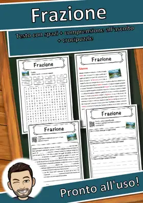
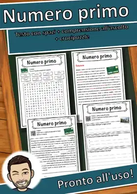
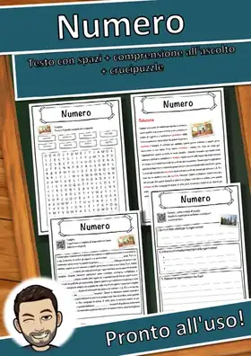
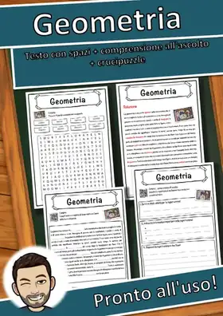

Schede didattiche Matematica
58 schede didattiche in italiano sul tema «Matematica»: testo con spazi vuoti, comprensione all'ascolto e crucipuzzle, da stampare (PDF) con soluzioni.
58 materiali
Classe

Frazione – Scheda didattica classe quarta e quinta: testo con spazi vuoti e crucipuzzle
Matematica – Scheda: testo con spazi vuoti, comprensione all'ascolto e crucipuzzle

Numero – Scheda: testo con spazi vuoti, comprensione all'ascolto e crucipuzzle

Numero primo – Scheda: testo con spazi vuoti, comprensione all'ascolto e crucipuzzle

Numero - Scheda - testo con spazi vuoti, comprensione all'ascolto e crucipuzzle

Geometria – Scheda: testo con spazi vuoti, comprensione all'ascolto e crucipuzzle
Manfredonia
Manfredonia – Scheda: testo con spazi vuoti, ascolto e crucipuzzle
Trani
Trani – Scheda: testo con spazi vuoti, comprensione all'ascolto e crucipuzzle
Agrigento
Agrigento – Scheda: testo con spazi vuoti, ascolto e crucipuzzle
Trapani
Trapani – Scheda: testo con spazi vuoti, comprensione all'ascolto e crucipuzzle
Cuneo
Cuneo – Scheda: testo con spazi vuoti, comprensione all'ascolto e crucipuzzle
Moncalieri
Moncalieri – Scheda: testo con spazi vuoti, ascolto e crucipuzzle
Benevento
Benevento – Scheda: testo con spazi vuoti, ascolto e crucipuzzle
Carpi
Carpi – Scheda: testo con spazi vuoti, comprensione all'ascolto e crucipuzzle
Cremona
Cremona – Scheda: testo con spazi vuoti, comprensione all'ascolto e crucipuzzle
Caserta
Caserta – Scheda: testo con spazi vuoti, comprensione all'ascolto e crucipuzzle
Ragusa
Ragusa – Scheda: testo con spazi vuoti, comprensione all'ascolto e crucipuzzle
Asti
Asti – Scheda: testo con spazi vuoti, comprensione all'ascolto e crucipuzzle
Casoria
Casoria – Scheda: testo con spazi vuoti, comprensione all'ascolto e crucipuzzle
Corigliano-Rossano
Corigliano-Rossano – Scheda: testo con spazi vuoti, ascolto e crucipuzzle
Cinisello Balsamo
Cinisello Balsamo – Scheda: testo con spazi vuoti, ascolto e crucipuzzle
Pozzuoli
Pozzuoli – Scheda: testo con spazi vuoti, comprensione all'ascolto e crucipuzzle
Varese
Varese – Scheda: testo con spazi vuoti, comprensione all'ascolto e crucipuzzle
Sesto San Giovanni
Sesto San Giovanni – Scheda: testo con spazi vuoti, ascolto e crucipuzzle
Grosseto
Grosseto – Scheda: testo con spazi vuoti, comprensione all'ascolto e crucipuzzle
Brindisi
Brindisi – Scheda: testo con spazi vuoti, comprensione all'ascolto e crucipuzzle
Catanzaro
Catanzaro – Scheda: testo con spazi vuoti, ascolto e crucipuzzle
Pisa
Pisa – Scheda: testo con spazi vuoti, comprensione all'ascolto e crucipuzzle
Lucca
Lucca – Scheda: testo con spazi vuoti, comprensione all'ascolto e crucipuzzle
Alessandria
Alessandria – Scheda: testo con spazi vuoti, ascolto e crucipuzzle
La Spezia
La Spezia – Scheda: testo con spazi vuoti, ascolto e crucipuzzle
Barletta
Barletta – Scheda: testo con spazi vuoti, comprensione all'ascolto e crucipuzzle
Lecce
Lecce – Scheda: testo con spazi vuoti, comprensione all'ascolto e crucipuzzle
Pesaro
Pesaro – Scheda: testo con spazi vuoti, comprensione all'ascolto e crucipuzzle
Udine
Udine – Scheda: testo con spazi vuoti, comprensione all'ascolto e crucipuzzle
Novara
Novara – Scheda: testo con spazi vuoti, comprensione all'ascolto e crucipuzzle
Cesena
Cesena – Scheda: testo con spazi vuoti, comprensione all'ascolto e crucipuzzle
Ancona
Ancona – Scheda: testo con spazi vuoti, comprensione all'ascolto e crucipuzzle
Piacenza
Piacenza – Scheda: testo con spazi vuoti, comprensione all'ascolto e crucipuzzle
Terni
Terni – Scheda: testo con spazi vuoti, comprensione all'ascolto e crucipuzzle
Vicenza
Vicenza – Scheda: testo con spazi vuoti, comprensione all'ascolto e crucipuzzle
Forlì
Forlì – Scheda: testo con spazi vuoti, comprensione all'ascolto e crucipuzzle
Pescara
Pescara – Scheda: testo con spazi vuoti, comprensione all'ascolto e crucipuzzle
Trento
Trento – Scheda: testo con spazi vuoti, comprensione all'ascolto e crucipuzzle
Bergamo
Bergamo – Scheda: testo con spazi vuoti, comprensione all'ascolto e crucipuzzle
Monza
Monza – Scheda: testo con spazi vuoti, comprensione all'ascolto e crucipuzzle
Salerno
Salerno – Scheda: testo con spazi vuoti, comprensione all'ascolto e crucipuzzle
Foggia
Foggia – Scheda: testo con spazi vuoti, comprensione all'ascolto e crucipuzzle
Nessun materiale trovato: prova con un'altra parola o un altro filtro.